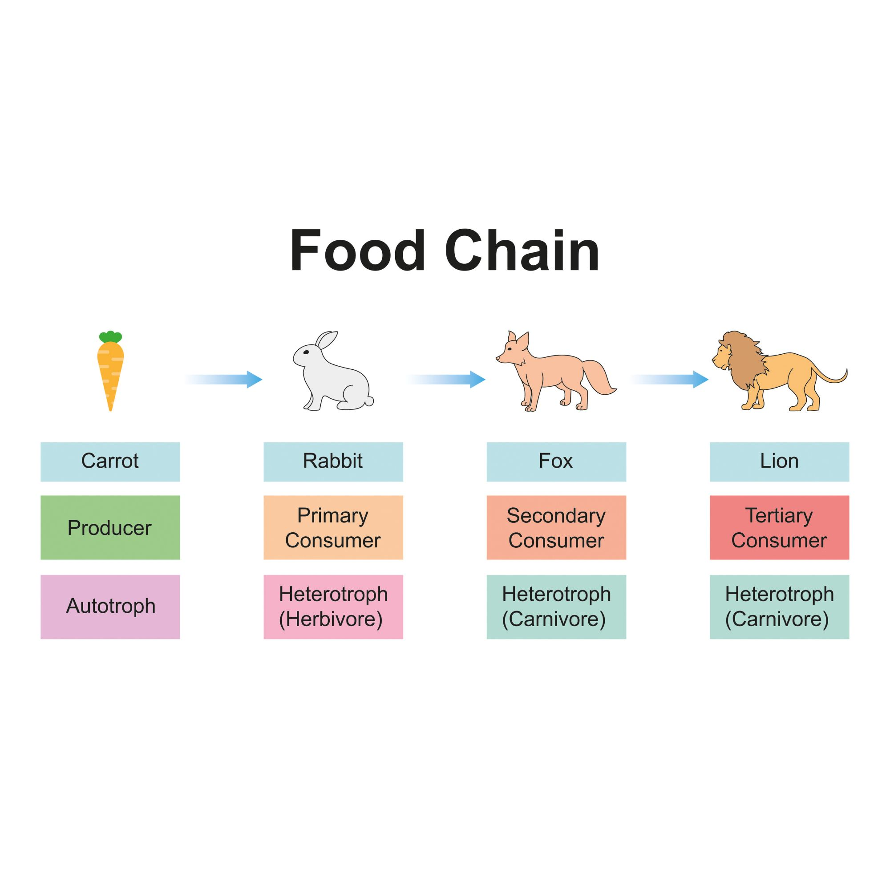
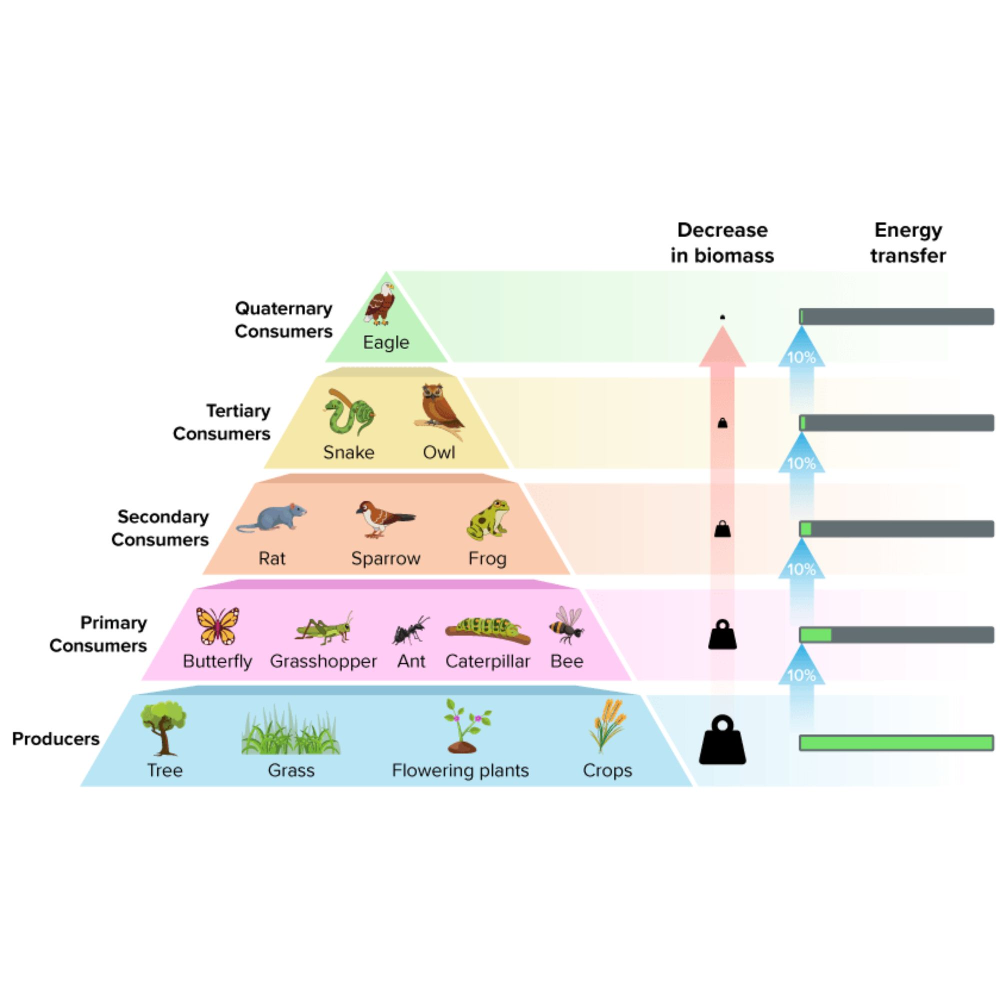

In this activity, you will explore how energy and biomass move through Ohio's ecosystems. You must complete each section to move forward.
Instructions: Read all info, watch the required video, and pass the activities. You need a 70% or higher on the final quiz to receive your certificate.
Section 1: Trophic Levels
A Food Chain shows a single path of energy. A Food Web is a complex map of many overlapping chains.

In this Ohio example: Carrot (Producer) → Rabbit (Primary) → Fox (Secondary) → Lion (Tertiary).
Interactive Practice
Look at the Food Web image below:
1. Name ONE Producer shown in the green grass at the bottom:
2. The Owl is eating a snake. What consumer level is the Owl here?
Section 2: The 10% Rule
Ecological pyramids show how energy and biomass decrease as you go up. Only 10% of energy moves to the next level.
Pyramid Types:
Energy: Always upright. Shows joules/calories.
Biomass: Total mass of organisms at a level. Usually upright.
Numbers: Can be inverted (e.g., many insects on one Ohio Oak tree).
Required Video
Watch the full video to unlock the Biomass Practice.
Biomass Practice

1. If the Producers have 50,000 kg of biomass, how much reaches the Secondary Consumers? kg
2. If the Quaternary Consumer has 2 kg, how much was at the Producer level? kg
Mastery Quiz
You need at least 7/10 to pass. Answer one question at a time.